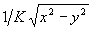
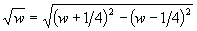

Author: Peter Ogilvy Colour Vision Systems
\ this file assumes decimal but reverts to hex
\ at end
\ define #pi
\ 3.1415926535897932384 2CONSTANT #pi
$6487ED51 $00000002 2CONSTANT #fpi
$6487ED51 $00000001 2CONSTANT #fpi/2
$6487ED51 $00000003 2CONSTANT #fpi*2
$9B7812AF $00000002 2CONSTANT -#fpi
$9B7812AF $00000003 2CONSTANT -#fpi*2
$08000000 CONSTANT #q29_0.25
$10000000 CONSTANT #q29_0.5
$18000000 CONSTANT #q29_0.75
$20000000 CONSTANT #q29_1.0
$2D413CC8 CONSTANT #q29_sqrt(2.0)
$3243F6A9 CONSTANT #q29_pi/2
$38000000 CONSTANT #q29_1.75
$00000000 $00000000 2CONSTANT #f0.0
$40000000 $00000001 2CONSTANT #f1.0
$5A000000 $00000009 2CONSTANT #f360.0
\ store atan values
DECIMAL
30 CONSTANT #cordic_bits
CREATE atan_table
421657428 t,
248918914 t,
131521918 t,
66762579 t,
33510843 t,
16771757 t,
8387925 t,
4194218 t,
2097141 t,
1048574 t,
524287 t,
262144 t,
131072 t,
65536 t,
32768 t,
16384 t,
8192 t,
4096 t,
2048 t,
1024 t,
512 t,
256 t,
128 t,
64 t,
32 t,
16 t,
8 t,
4 t,
2 t,
1 t,
\ calculate inverse circular functions using CORDIC algorithm
\ allow all three inputs as they are useful
\ for the different functions
: _inverse_circular_CORDIC { variable %x variable %y variable %z ( -- x z ) }
\ worst case input x = 0x1FFFFFFF, y = 0x1FFFFFFF
\ x will be driven to 0x5FFFFFE0 ie two bits more
\ hence inputs are restricted so above worst cases
\ avoids stomping the sign bit.
\ inputs should be in fixed point format with MSB
\ of the larger in the 28th bit, the smaller should
\ be positioned relatively
#cordic_bits zero DO
\ calculate deltas
%x @ I >>a ( -- dx )
%y @ I >>a ( dx -- dx dy )
atan_table I CELLS + @ ( dx dy -- dx dy dz )
%y @ 0> IF
%z @ + %z ! \ z = z + dz
%x @ + %x ! \ x = x + dy
%y @ SWAP - %y ! \ y = y - dx
ELSE
%z @ SWAP - %z ! \ z = z - dz
%x @ SWAP - %x ! \ x = x - dy
%y @ + %y ! \ y = y + dx
THEN
LOOP
\ return both x & z as both are usefull for different functions
%x @
%z @
;
f-a-tan-two FLOATING EXT
( F: r1 r2 -- r3 ) or ( r1 r2 -- r3 )
r3 is the radian angle whose tangent is r1/r2. An ambiguous condition exists if r1 and r2 are zero.
See: A.12.6.2.1489 FATAN2
: FATAN2 { variable %Xm variable %Xe variable %Ym variable %Ye -- ( %atanY/X ) }
\ if y=0 set result is zero and abort
\ otherwise we get small floating point error returned
\ this also handles y=0, x=0
%Ym @ 0= IF
#f0.0
EXIT
THEN
\ calculate the difference in exponents
\ to find out which is biggest
\ adjust mantissa of biggest so MSB is in bit 28
\ adjust mantissa of smallest relative to biggest
\ use absolute x as _inverse_circular_CORDIC returns range -pi/2 to pi/2
\ hence x must be positive
\ we will correct later with artan(-x) = -artan(x)
%Ye @ %Xe @ - 0< IF
\ x is biggest, shift y
%Xm @ ABS 1 >>a
%Ym @ %Xe @ %Ye @ - 1+ >>a
ELSE
\ y is biggest, shift x
%Xm @ ABS %Ye @ %Xe @ - 1+ >>a
%Ym @ 1 >>a
THEN
\ calculate artan
0 _inverse_circular_CORDIC
\ drop the other output as its no
\ use for us here
NIP
\ convert output to float
29 q>f
\ if x is negative use artan(-x) = -artan(x)
%Xm @ 0< IF
FNEGATE
THEN
;
f-a-tan FLOATING EXT
( F: r1 -- r2 ) or ( r1 -- r2 )
r2 is the principal radian angle whose tangent is r1.
: FATAN ( r1 -- r2 )
#f1.0 FSWAP FATAN2
;
\ calculate circular functions using CORDIC algorithm
: _circular_CORDIC { variable %x variable %y variable %z ( -- x y ) }
\ inputs should be in fixed point format with MSB
\ of the larger in the 28th bit, the smaller should
\ be positioned relative to the larger
#cordic_bits 0 DO
\ calculate deltas
%x @ I >>a ( -- dx )
%y @ I >>a ( dx -- dx dy )
atan_table I CELLS + @ ( dx dy -- dx dy dz )
%z @ 0< IF
%z @ + %z ! \ z = z + dz
%x @ + %x ! \ x = x + dy
%y @ SWAP - %y ! \ y = y - dx
ELSE
%z @ SWAP - %z ! \ z = z - dz
%x @ SWAP - %x ! \ x = x - dy
%y @ + %y ! \ y = y + dx
THEN
LOOP
\ return both x & y as both are usefull for different functions
%x @
%y @
;
\ K = 0x136e9db3 magic number needs explanation
: _sincos { variable %Zm variable %Ze -- variable %sinz variable %cosz }
\ initialize x = K, y = 0
0x136e9db3 0
\ shift mantissa to correct fixed point location for z
%Zm @ %Ze @ NEGATE 2+ >>a
\ call the CORDIC algorithm
_circular_CORDIC
\ make sure zero values are really 0
DUP ABS 5 < IF
DROP zero
THEN
%sinz !
DUP ABS 5 < IF
DROP zero
THEN
%cosz !
;
takes an angle and uses trig identities for sin to put it in the range -pi to pi then calls _sincos to do the sin & cos calculation
As written will only work if floating format of host is the same. written so normal path is fastest. Code can recurse up to three times
If the input angle is too large, when removing multiples of two pi we may be left with only rounding point error. In this case we return r2=r3=0
: _range_sincos ( float1 -- sin cos )
\ if in range pi/2 to -pi/2 find answer and exit
#fpi/2 FOVER FABS F< not IF
_sincos
EXIT
THEN
\ if in range pi to -pi then use
\ sin ( x ) = sin ( pi - x )
\ and cos ( x ) = - cos ( pi - x )
\ If greater than pi/2 subtract from pi
\ otherwise less than -pi/2 subtract from -pi
#fpi FOVER FABS F< not IF
FDUP F0< IF
-#fpi
ELSE
#fpi
THEN
FSWAP F-
_sincos
NEGATE \ negate cos
EXIT
THEN
\ if in range -2pi to +2pi
\ If greater than pi subtract 2pi otherwise add 2pi
\ Only an equivalent coordinate change.
#fpi*2 FOVER FABS F< not IF
FDUP F0< IF
#fpi*2
ELSE
-#fpi*2
THEN
F+
RECURSE
EXIT
THEN
\ we can remove multiples of 2 pi
\ remember we are dealing with floating point. The more bits
\ that get used to represent multiples of pi, the less left to
\ represention fractions of pi. It is the fractions of pi that
\ generate meaningfull results.
FDUP #fpi*2 F/
FLOOR
\ fv fn(--
#fpi*2 F* F-
\ fr(--
#fpi*2 FOVER
\ because the error may be able to give a negative result
\ fr fc fr(--
FABS F< IF
\ if you end up in here the number is just too
\ big for any meaningfull result
\ We are just dealing with the floating point error.
\ and when it comes to errors any error
\ is as good as another.
FDROP
\ sin cos
0 0
EXIT
THEN
RECURSE
;
f-sine-cos FLOATING EXT
( F: r1 -- r2 r3 ) or ( r1 -- r2 r3 )
r2 is the sine of the radian angle r1. r3 is the cosine of the radian angle r1.
As written will only work if floating format of host is the same. written so normal path is fastest. Code can recurse up to three times
If the input angle is too large, when removing multiples of two pi we may be left with only rounding point error. In this case we return r2=r3=0
: FSINCOS { ( r1 -- r2 r3 ) }{
variable %temp_cos
}
_range_sincos
%temp_cos !
29 q>f
%temp_cos @
29 q>f
;
f-sine FLOATING EXT
( F: r1 -- r2 ) or ( r1 -- r2 )
r2 is the sine of the radian angle r1.
: FSIN ( r1 -- r2 )
_range_sincos
DROP
29 q>f
;
f-cos FLOATING EXT
( F: r1 -- r2 ) or ( r1 -- r2 )
r2 is the cosine of the radian angle r1.
: FCOS ( r1 -- r2 )
_range_sincos
SWAP DROP
29 q>f
;
The following sample code can be used to test the above functions
: testFSIN ( -- ) \ prints a table of sin(x) CR CR 361 -360 DO I DUP . 2 * s>f #fpi F* 360 s>f F/ \ convert degrees to radians FSIN F. \ print sine CR 5 +LOOP ; : testFCOS ( -- ) \ prints a table of cos(x) CR CR 361 -360 DO I DUP . 2 * s>f #fpi F* 360 s>f F/ \ convert degrees to radians FCOS F. \ print cosine CR 5 +LOOP ;
f-tan FLOATING EXT
( F: r1 -- r2 ) or ( r1 -- r2 )
r2 is the tangent of the radian angle r1. An ambiguous condition exists if cos(r1) is zero.
: FTAN { ( r1 -- r2 ) }{
variable %temp_cos
}
_range_sincos
\ if cos = 0 return 0.0
DUP 0= IF
2DROP
#f0.0
EXIT
THEN
\ there may be efficiency gains to doing an integer division
\ but given the range of the result I couldn't get it to work
\ if not we should move the conversion from q29 up to _sincos
\ as it simplifies the other dependant functions
29 q>f ROT 29 q>f 2SWAP F/
;
CREATE atanh_table
0 t,
294906490 t,
137123709 t,
67461703 t,
33598225 t,
16782680 t,
8389290 t,
4194389 t,
2097162 t,
1048577 t,
524288 t,
262144 t,
131072 t,
65536 t,
32768 t,
16384 t,
8192 t,
4096 t,
2048 t,
1024 t,
512 t,
256 t,
128 t,
64 t,
32 t,
16 t,
8 t,
4 t,
2 t,
1 t,
: _inverse_hyperbolic_CORDIC { variable %x variable %y variable %z ( -- x z ) }
#cordic_bits 1 DO
\ CR ." X:" %x @ . ." Y:" %y @ . ." Z:" %z @ .
\ calculate deltas
%x @ I >>a ( -- dx )
\ ." dx:" DUP .
%y @ I >>a ( dx -- dx dy )
\ ." dy:" DUP .
atanh_table I CELLS + @ ( dx dy -- dx dy dz )
\ ." dz:" DUP .
\ apply deltas
%y @ 0> IF
%z @ + %z ! \ z = z + dz
%x @ SWAP - %x ! \ x = x + dy
%y @ SWAP - %y ! \ y = y - dx
ELSE
%z @ SWAP - %z ! \ z = z - dz
%x @ + %x ! \ x = x - dy
%y @ + %y ! \ y = y + dx
THEN
I 4 = I 13 = OR IF
\ CR ." X:" %x @ . ." Y:" %y @ . ." Z:" %z @ .
\ calculate deltas
%x @ I >>a ( -- dx )
\ ." dx:" DUP .
%y @ I >>a ( dx -- dx dy )
\ ." dy:" DUP .
atanh_table I CELLS + @ ( dx dy -- dx dy dz )
\ ." dz:" DUP .
\ apply deltas
%y @ 0> IF
%z @ + %z ! \ z = z + dz
%x @ SWAP - %x ! \ x = x + dy
%y @ SWAP - %y ! \ y = y - dx
ELSE
%z @ SWAP - %z ! \ z = z - dz
%x @ + %x ! \ x = x - dy
%y @ + %y ! \ y = y + dx
THEN
THEN
LOOP
\ CR ." X:" %x @ . ." Y:" %y @ . ." Z:" %z @ . CR
\ return both x & z as both are usefull for different functions
%x @
%z @
;
f-a-tan-h FLOATING EXT
( F: r1 -- r2 ) or ( r1 -- r2 )
r2 is the floating-point value whose hyperbolic tangent is r1. An ambiguous condition exists if r1 is outside the range of -1E0 to 1E0.
: FATANH ( r1 -- r2 )
\ If r1 not in range 1 to -1
\ set result is zero and exit
FDUP FABS #f1.0 F< not IF
FDROP
#f0.0
EXIT
THEN
\ if r1=0 set result is zero and exit otherwise
\ we get small floating point error returned
FDUP F0= IF
FDROP
#f0.0
EXIT
THEN
\ convert r1 to correct format for CORDIC algorithm,
\ stack before may be treated as ( Ym Ye -- ) where
\ Ym is the mantissa, Ye is the exponent
NEGATE 2+ >>a
\ set up X & Y for CORDIC algorithm
#q29_1.0 SWAP
\ calculate artanh
0 _inverse_hyperbolic_CORDIC
\ drop the other output from _inverse_circular_CORDIC
\ as its no use for us here
NIP
\ convert output to float
29 q>f
;
f-a-sine FLOATING EXT
( F: r1 -- r2 ) or ( r1 -- r2 )
r2 is the principal radian angle whose sine is r1. An ambiguous condition exists if |r1| is greater than one.
: FASIN { ( r1 -- r2 ) }{
variable %E
}
\ If r1 not in range 1 to -1
\ set result to zero and exit
\ ( r1 -- r1 )
FDUP FABS #f1.0 FSWAP F< IF
FDROP
#f0.0
EXIT
THEN
\ if r1=0 set result to zero and exit otherwise
\ we get small floating point error returned
\ ( r1 -- r1 )
FDUP F0= IF
FDROP
#f0.0
EXIT
THEN
\ if r1=+/-1 set result to +/-pi/2 otherwise
\ we get undefined results later as cos(r1) = 0
\ hence we cant use atan
\ ( r1 -- r1 )
FDUP FABS #f1.0 F- F0= IF
#fpi/2 F*
EXIT
THEN
\ convert r1 to q29 for CORDIC algorithm
\ ( r1 -- r1 n1 )
FDUP 29 f>q
\ calculate sqrt(1-r1^2)/K
\ ( r1 n1 -- r1 sqrt(1-r1^2)/K )
\ if |n1| > 3/4 scale otherwise
\ just call the CORDIC routine
ABS DUP #q29_0.75 < not IF
\ calculate M & E
\ ( r1 |n1| -- r1 |n1| M )
DUP #q29_1.0 SWAP -
2 %E !
BEGIN DUP #q29_0.5 < WHILE
1 LSHIFT \ multiply M by 2
1 %E +! \ update E
REPEAT
\ calculate new x and y
\ ( r1 |n1| M -- r1 x1 y1 z1 )
OVER OVER
+ #q29_1.0 +
ROT ROT
- #q29_1.0 +
BEGIN
OVER DUP #q29_1.0 */
OVER DUP #q29_1.0 */ -
#q29_1.0 >
WHILE
1 >>a SWAP 1 >>a SWAP
-2 %E +! \ update E
REPEAT
0
\ call CORDIC
\ ( r1 x1 y1 z1 -- r1 x2 z2 )
_inverse_hyperbolic_CORDIC
\ drop the angle output from
\ _inverse_hyperbolic_CORDIC
\ as its no use for us here
\ ( r1 x2 z2 -- r1 x2 )
DROP
\ compensate for scaling
\ ( r1 x2 -- r1 sqrt(1-r1^2)/K )
%E @
0x1 AND
0<> IF
#q29_1.0 #q29_sqrt(2.0) */
THEN
%E @ 1 >>a
DUP 0< IF
NEGATE LSHIFT
ELSE
>>a
THEN
ELSE
\ set up X & Y for CORDIC algorithm
\ ( r1 n1 -- r1 1 n1 0 )
#q29_1.0 SWAP 0
\ call CORDIC
\ ( r1 x1 y1 z1 -- r1 x2 z2 )
_inverse_hyperbolic_CORDIC
\ drop the angle output from
\ _inverse_hyperbolic_CORDIC
\ as its no use for us here
\ ( r1 x2 z2 -- r1 sqrt(1-r1^2)/K )
DROP
THEN
\ calculate sqrt(1-r1^2)
\ multiply by K = 0x26a3d0ed (from hyperbolic CORDIC algorithm)
\ both values are q29 format and we want the result to also be
\ ( r1 sqrt(1-r1^2)/K -- r1 sqrt(1-r1^2) )
0x26a3d0ed
#q29_1.0 */ 29 q>f
\ calculate asin(r1)
\ use asin(r1) = atan(r1/sqrt(1-r1^2))
\ ( r1 sqrt(1-r1^2) -- r2 )
FSWAP
FATAN2
;
f-a-cos FLOATING EXT
( F: r1 -- r2 ) or ( r1 -- r2 )
r2 is the principal radian angle whose cosine is r1. An ambiguous condition exists if |r1| is greater than one.
: FACOS ( r1 -- r2 )
\ if r1=1.0 set result to zero and exit otherwise
\ we get small floating point error returned
FDUP #f1.0 F- F0= IF
FDROP
#f0.0
EXIT
THEN
FASIN #fpi/2 FSWAP F-
;
The inverse hyperbolic CORDIC function returns:

as one of its results. By using the identity;

we may develop a general square root function.
f-square-root FLOATING EXT
( F: r1 -- r2 ) or ( r1 -- r2 )
r2 is the square root of r1. An ambiguous condition exists if r1 is less than zero.
: FSQRT { ( r1 -- r2 ) }{
variable %4factors
variable %E
}
\ if r1<0 set result is zero and exit
\ ambiguous condition
FDUP F0< IF
FDROP
#f0.0
EXIT
THEN
\ if r1=0 set result is zero and exit otherwise
\ we get small floating point error returned
FDUP F0= IF
FDROP
#f0.0
EXIT
THEN
\ remove factors of four
\ by playing with exponent
2 /MOD
%4factors !
\ convert r1 to q29 for CORDIC algorithm
\ ( r1 -- n1 )
29 f>q
\ calculate sqrt(r1)/K
\ ( n1 -- sqrt(r1)/K )
\ if n1 > 7/4 scale to avoid overflow in CORDIC
\ otherwise just call the CORDIC routine
DUP #q29_1.75 < not IF
\ use sqrt(2x) = sqrt(2)*sqrt(x)
\ divide n1 by two
2/
\ set up X Y & Z for CORDIC algorithm
\ ( n1 -- n1+1/4 n1-1/4 0 )
DUP #q29_0.25 +
SWAP #q29_0.25 -
0
\ call CORDIC
\ ( x1 y1 z1 -- r1 x2 z2 )
_inverse_hyperbolic_CORDIC
\ drop the angle output from
\ _inverse_hyperbolic_CORDIC
\ as its no use for us here
\ ( x2 z2 -- x2 )
DROP
\ compensate for scaling multiply by sqrt(2)
\ ( x2 -- sqrt(1-r1^2)/K )
#q29_sqrt(2.0)
#q29_1.0 */
ELSE
\ set up X Y & Z for CORDIC algorithm
\ ( n1 -- n1+1/4 n1-1/4 0 )
DUP #q29_0.25 +
SWAP #q29_0.25 -
0
\ call CORDIC
\ ( x1 y1 z1 -- x2 z2 )
_inverse_hyperbolic_CORDIC
\ drop the angle output from
\ _inverse_hyperbolic_CORDIC
\ as its no use for us here
\ ( x2 z2 -- sqrt(r1)/K )
DROP
THEN
\ calculate sqrt(r1)
\ multiply by K = 0x26a3d0ed (from hyperbolic CORDIC algorithm)
\ both values are q29 format and we want the result to also be
\ ( sqrt(r1)/K -- sqrt(r1) )
0x26a3d0ed #q29_1.0 */ 29 q>f
\ mult by two for each four factor
\ removed before square root
\ by playing with exponent
%4factors @ +
;
: _hyperbolic_CORDIC { variable %x variable %y variable %z ( -- x z ) }
#cordic_bits 1 DO
CR ." X:" %x @ . ." Y:" %y @ . ." Z:" %z @ . CR
\ calculate deltas
%x @ I >>a ( -- dx )
\ ." dx:" DUP .
%y @ I >>a ( dx -- dx dy )
\ ." dy:" DUP .
atanh_table I CELLS + @ ( dx dy -- dx dy dz )
\ ." dz:" DUP .
\ apply deltas
%z @ 0< IF
%z @ + %z ! \ z = z + dz
%x @ SWAP - %x ! \ x = x + dy
%y @ SWAP - %y ! \ y = y - dx
ELSE
%z @ SWAP - %z ! \ z = z - dz
%x @ + %x ! \ x = x - dy
%y @ + %y ! \ y = y + dx
THEN
I 4 = I 13 = OR IF
\ CR ." X:" %x @ . ." Y:" %y @ . ." Z:" %z @ . CR
\ calculate deltas
%x @ I >>a ( -- dx )
\ ." dx:" DUP .
%y @ I >>a ( dx -- dx dy )
\ ." dy:" DUP .
atanh_table I CELLS + @ ( dx dy -- dx dy dz )
\ ." dz:" DUP .
\ apply deltas
%z @ 0< IF
%z @ + %z ! \ z = z + dz
%x @ SWAP - %x ! \ x = x + dy
%y @ SWAP - %y ! \ y = y - dx
ELSE
%z @ SWAP - %z ! \ z = z - dz
%x @ + %x ! \ x = x - dy
%y @ + %y ! \ y = y + dx
THEN
THEN
LOOP
\ CR ." X:" %x @ . ." Y:" %y @ . ." Z:" %z @ . CR
\ return both x & z as both are usefull for different functions
%x @
%y @
;
\ K = 0x26a3d0ed magic number needs explanation
: _sinhcosh { variable %Zm variable %Ze -- variable %sinhz variable %coshz }
\ initialize x = K, y = 0
0x26a3d0ed 0
\ shift mantissa to correct fixed point location for z
%Zm @ %Ze @ NEGATE 2+ >>a
\ call the CORDIC algorithm
_hyperbolic_CORDIC
\ make sure zero values are really 0
\ don't need to test cosh as its never 0
DUP 1 = IF
DROP zero
THEN
%sinhz !
%coshz !
;
f-cosh FLOATING EXT
( F: r1 -- r2 ) or ( r1 -- r2 )
r2 is the hyperbolic cosine of r1.
f-cinch FLOATING EXT
( F: r1 -- r2 ) or ( r1 -- r2 )
r2 is the hyperbolic sine of r1.
f-tan-h FLOATING EXT
( F: r1 -- r2 ) or ( r1 -- r2 )
r2 is the hyperbolic tangent of r1.
HEX